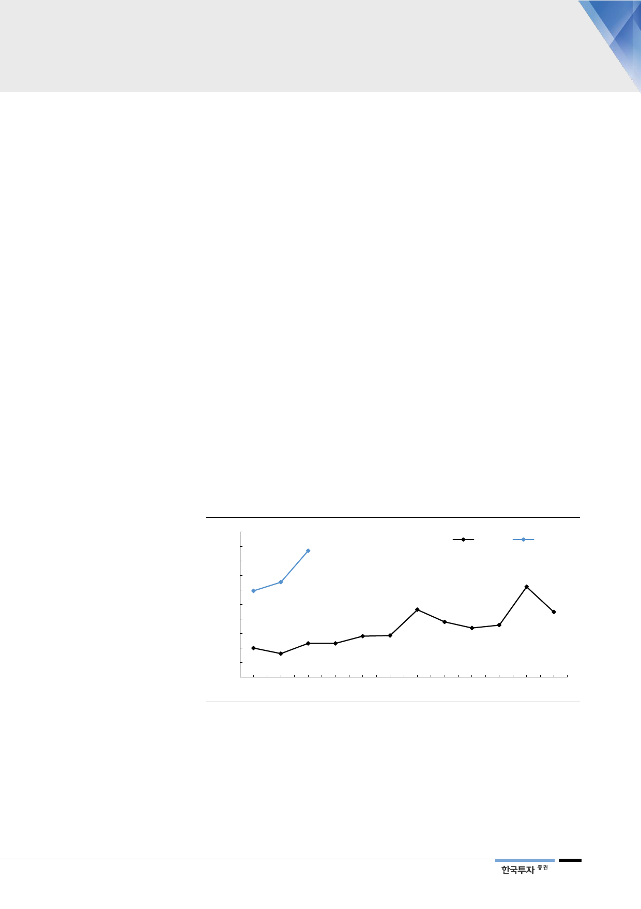

의류 건조기 성장에 주목
미국에서는 보급률 90%
건조기 보급률 10% 내외
장기 전망 밝아
과거 김치 냉장고도
보급률이 90%까지
빠르게 상승했음
신성장제품 중에서도 의류건조기의 성장세에 가장 주목해야 한다. 의류건조기는
해외에서는 필수재로 인식된 제품군이다. 미국에서는 보급률이 90%에 육박할 만
큼 세탁기와 마찬가지로 필수재다. 북미나 유럽 지역은 일반적으로 세탁기와 건
조기를 세트로 구매하는 경우가 많다. 북유럽은 춥고 다습한 지역이기 때문이다.
최근 한국의 경우는 최근 황사, 미세먼지 등으로 야외에 건조하는 경우가 크게 줄
었고 베란다 확장형 아파트가 늘면서 빨래를 널 수 있는 공간이 작아졌다. 또한
건조기의 기능에서 바쁜 생활 속에 빠른 건조가 가능하다는 기본 기능 이외에도
세탁물의 먼지제거 기능 또한 사람들의 구매욕을 부추기고 있다.
여론조사에 따르면 현재 30~40대 가구 내 의류건조기 보급률은 22% 수준이다.
해당 나이 대는 신혼부부들이 많아 건조기 구매 비중이 상대적으로 높으며, 한 언
론에 따르면 전체 가구대비로는 10% 내외다. 에누리닷컴에 따르면 1~3월 월별
의류건조기 매출액이 전년대비 각각 197%, 304%, 275% 늘었고, 하이마트 통계
로도 1~5월 매출액이 전년대비 230% 증가했다. 2017년 추산 국내 건조기 판매
량은 약 40만대에서 올해서 100만대 이상으로 늘어날 것이다.
과거 김치냉장고가 처음 출시된 이후 가정내 보급률이 단기간에 빠르게 상승한
점을 참고할 만하다. 김치냉장고는 1995년 처음으로 출시 이후 2000년 11%였
던 보급률이 2013년에 86%까지 상승했다. 기존에 없던 상품군이어도 소비자의
니즈를 정확하게 잘 파악한 제품이라면 보급률이 빠르게 상승할 수 있음을 보여
주는 좋은 선례다.
[그림 11] 건조기 월별 매출 증가(17년 1월을 100으로 가정)
500
435
450
2017
2018
400
350
297
327
311
300
250
232
224
200
190
169
179
141 143
150 100
116 116
100
81
50
0
1월 2월 3월 4월 5월 6월 7월 8월 9월 10월 11월 12월
자료: 에누리닷컴, 한국투자증권
9